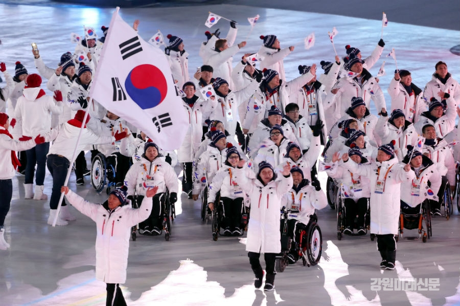

평창패럴림픽 온라인 인기 키워드 '감동'
김수빈
(원 기사 국제뉴스)

패럴림픽 기간 동안 온라인 상에서는 '평창 패럴림픽'과 관련해 어떤 얘기들이 오갔을까. 국가정보자원관리원의 빅데이터 공통기반 '혜안'을 통해, 뉴스와 블로그, 트위터의 연관 키워드를 통해 패럴림픽 개막식날인 3월 9일부터 폐막식 다음날인 19일까지 사람들이 가장 많이 언급한 내용을 살펴보았다.
기간 동안 '패럴림픽'과 관련해 뉴스 8,712건, 블로그 966건, 트위터 99,034건을 분석한 결과, 긍정적인 단어가 49,266건으로 45.3%, 부정적인 단어가 36,139건으로 33.2%를 차지해, 긍정적인 언어사용이 12%p 앞선 것으로 나타났다.
가장 많이 사용된 긍정적 단어는 '감동'으로 6,143건이 언급됐으며, '관심(4,249건), 금메달(3,980건), 응원(3,582건)'이 뒤를 이었다. 기타 단어로 '열심히, 행복, 최고, 최선, 영웅, 인기, 평화, 즐기(다), 지원, 격려, 성원' 등이 나타나, 패럴림픽 경기에 최선을 다한 선수들을 응원하고, 패럴림픽을 즐기는 모습을 볼 수 있었다.
부정적인 단어로는 '난리(4,606건)'가 가장 많았으나, 웹소셜 데이터 분석 결과, 사람들로 북적이는 상황이나 선수의 선전이나 유명인사의 출현으로 사람들이 흥분한 모습을 '난리'라는 단어로 표현하거나, 패럴림픽과 실제 관련 없는 일로 '패럴림픽 열리는 기간에 이런 일로 난리났다'는 표현하는 경우가 대부분이라 유의미하지 않은 것으로 나타났다.뒤를 이은 '성매매(687건)'라는 부정적 단어 역시, 패럴림픽 기간 동안 있었던 다른 사회적 사건을 언급한 경우가 대부분이었고, 패럴림픽 최초로 운영된 '성폭력 상담센터'를 설명하며 사용된 단어로 나타났다.
그 외에 '문제(603건), 차별(599건), 비하(484건)'이 뒤를 이었는데, 올림픽과 비교했을 때 확연히 적은 경기 중계와 경기장 관중수를 이야기하며 '차별'이란 단어를 많이 썼으며, 장애인에 대한 차별과 편견을 언급할 때("장애인에 대한 차별과 편견을 깬 패럴림픽", "패럴림픽을 통해 차별과 편견이 사라져야")에도 많이 사용하였다. '문제'의 경우는, 패럴림픽 운영과 관련된 '문제점' 보다는, 다양한 경우에 대한 설명 시 많이 사용되었다.


또한, 같은 기간 '평창'과 관련하여 뉴스 13,275건, 블로그 2,063건, 트위터 82,099건을 분석한 결과, 긍정적 단어 45.2%(44,007건), 중립 33.8%(32,907건), 부정 21.1%(20,523건)으로 긍정적 반응이 부정적인 반응보다 24%p 크게 앞지른 것으로 나타났다.특히 3월 11일에는 긍정 키워드가 부정 키워드를 크게 앞질렀는데, 신의현 선수가 이 날 크로스컨트리스키 남자 15㎞ 좌식에서 동메달을 획득하면서, 관심이 부쩍 높아진 것으로 풀이된다.
긍정 키워드로는 '응원(2,704건), 감동(2,566건), 평화(2,394건)' 순으로 패럴림픽을 성공적으로 개최하며, 명실공히 감동과 평화의 상징이 된 평창의 위상을 볼 수 있으며, 뒤를 이은 키워드는 '최고, 기대, 관심, 노력, 금메달, 인기, 즐기(다), 열정, 영웅' 이었다.
부정 키워드로 꼽힌 '철수(5,397건)'은 주로 패럴림픽과 함께 남북관계를 언급할 때 많이 사용된 단어로, 패럴림픽에 사상 처음 선수단을 파견한 북한에 대한 관심은 물론, 이와 연관되어 '비핵화, 김정은, 정상회담'의 키워드가 도출되는 것을 볼 때, 같은 시기 북미협상 등 정치적 뉴스와 함께 언급되며 나타난 것으로 해석된다.
이러한 결과는 패럴림픽이 경쟁과 순위에만 매몰되지 않는 '인간승리의 감동을 안겨 준 축제'였음을 시사하며, 평창이 올림픽과 패럴림픽을 통해 전 세계에 평화의 메시지를 전달한 도시로 자리매김한 것으로 볼 수 있다. 또한 패럴림픽 기간 염려될 수 있는 날씨나 교통, 전염병, 쓰레기 등과 관련된 부정적 키워드는 조사에서 나타나지 않을 정도로 미미한 것으로 보아, 철저한 준비를 통해 불편이 예상되는 상황에 대하여 적절히 대처한 결과로 풀이된다.